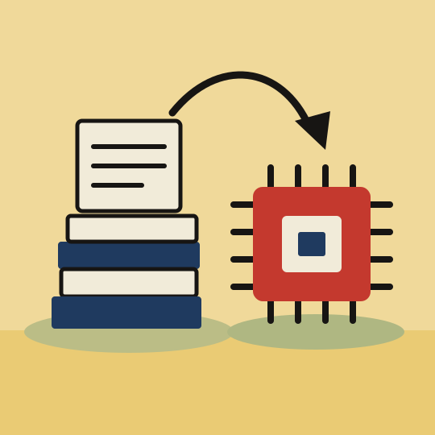
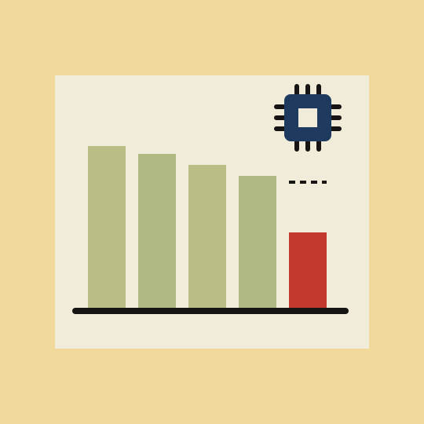
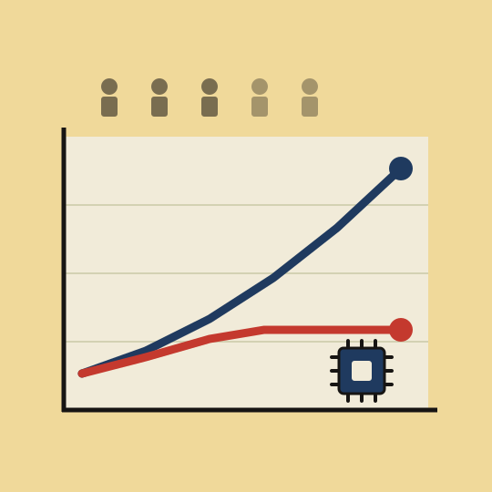
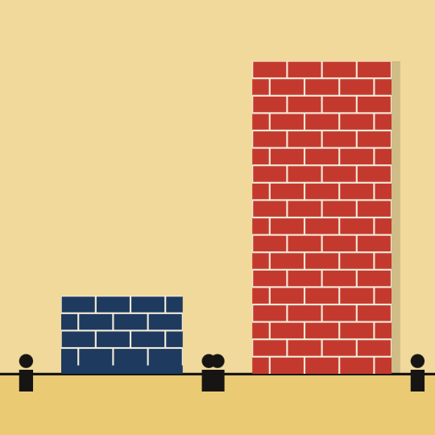
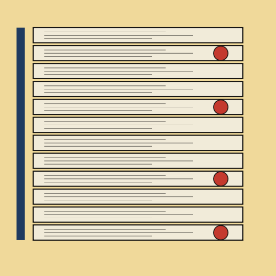
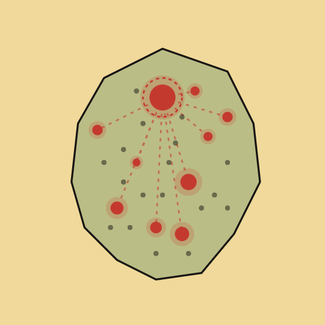

Our Publications

Policy Paper · November 2026
What American AI owes to European science
LIFT Policy Paper 2026-05 — November 2026
AIInnovationScience
Europe supplies about a quarter of the scientific articles cited by US artificial intelligence patents, including several building blocks of deep learning. For equal output in each field, European articles are cited by these patents nearly twice as often as Chinese or Japanese articles. The economic value of this science is realized in the United States: nearly nine out of ten patents that cite it are filed by US companies. This position is eroding: Europe’s share is falling for recent articles, along with its weight in global research, and AI research is shifting toward companies, where Europe has little presence. French articles are cited less than an average article in their field, and France produces half as much cited science per researcher as the United Kingdom.
Policy Paper · October 2026
Innovation and catch-up in the AI model market
LIFT Policy Paper 2026-04 — October 2026
AIInnovationCompetition
In AI, the best model sold for 0.1 dollar per million tokens or less, at least fifty times cheaper than a frontier model, catches up with its quality in less than a year. This catch-up could discourage growing investment, on the order of 715 billion dollars in 2026 for the main AI developers, by reducing the rent that a technological lead provides. On OpenRouter, frontier labs handle only 28% of tokens in August 2026, compared with three quarters in spring 2025, but still collect 71% of revenue thanks to higher prices. Relative to its competitors, a provider that releases a frontier model sees its imputed revenue roughly double in the following months, and the users of a model facing new competition mostly switch to other high-end models. This equilibrium rests on exceptional growth in consumption and remains fragile: frontier labs’ share of revenue fell from 82% to 71% between mid-July and mid-August 2026.
Policy Paper · October 2026
Rising AI spending and the rise of open-weight models
LIFT Policy Paper 2026-03 — October 2026
AIFranceOpen models
Firms’ AI spending is rising even as the unit cost of a token falls sharply: the increase comes from volumes far more than from prices. On OpenRouter, the share of open-weight models rises from 40% to 73% of tokens between January and August 2026, and from 11% to 34% of spending. Users attributed to France devote 31.0% of their spending to open models, compared with 19.3% worldwide. Calls to open models are four times longer than in January, but their average cost is only 3.8 times higher: the cost advantage persists. Reallocation toward open models accounts for 43% of the simulated decline in the cost of a constant French basket; it opens room for wider deployment rather than an automatic saving, which invites organizations to reason in terms of cost per completed task.
Policy Paper · October 2026
Generative AI: a freeze on youth hiring in exposed occupations
LIFT Policy Paper 2026-02 — October 2026
AIFranceEmploymentLabor market
Since November 2022, hires of 21-29-year-olds on open-ended contracts have fallen by 28.3% in the occupations most exposed to generative AI, compared with 7.5% in the least exposed. Separations are also falling, but less than hires: worker turnover is slowing and the market is freezing for young people in exposed occupations. The gap narrows with age, from more than 20 percentage points among 21-29-year-olds to less than 4 points after age 50, and it persists when fixed-term contracts are added to open-ended ones. It is not driven by developers alone, whose hires of young people on open-ended contracts fall by 42%: without them, the gap remains 17 points. Firms that report intensive use of AI hire relatively fewer young people, while their total headcount does not clearly diverge from that of other firms. The analysis covers labor turnover data from January 2019 to March 2026, matched with the Banque de France business survey, with which this work was carried out. The method and the full set of results are detailed in LIFT Working Paper 2026-02.

Working Paper · October 2026
Occupational exposure to generative AI, firm adoption and labor market dynamics in France
LIFT Working Paper 2026-02 — October 2026
AIFranceEmploymentLabor market
This paper studies how employment in France evolves with occupations’ exposure to generative artificial intelligence and with workers’ age. We build a new index that ranks occupations from least to most exposed, then draw on comprehensive administrative data on hires and separations between January 2019 and March 2026. Since November 2022, the month of ChatGPT’s public launch, both hires and separations on open-ended contracts have fallen more in the most exposed occupations, especially among young people. These trends point to a kind of freeze in labor turnover for new entrants in exposed occupations, with fewer entries and fewer exits. The result also holds among firms that report intensive use of AI: their hiring of young people on open-ended contracts declines relative to other firms, with no clear divergence in the evolution of their total employment compared with other firms. The main results are presented in short form in LIFT Policy Paper 2026-02.

Policy Paper · September 2026
Why AI is not (yet) making France more productive
LIFT Policy Paper 2026-01 — September 2026
AIFranceProductivity
France spends as much as the United States on information technology (6.5% of GDP in 2025, compared with 6.8%), but its hourly productivity has stagnated since 2015: its lag stems from the return on this spending. Upstream, it is at the European average for research, patents and capital, but its computing power per capita is more than 50% below the European average. The French use generative AI individually at least as much as other Europeans, but their firms integrate it less: only 18% use it, compared with 26% in Germany, and integration remains shallow, concentrated in product development rather than in cross-cutting functions. This lag is above all organizational: 69% of French workers receive neither encouragement, nor tools, nor training in AI from their employer, compared with 44% in the United States.
Working Paper · February 2026
Politics at work: workplace experience and political divides among employees in France
LIFT Working Paper 2026-01 — February 2026 (first released as an HEC Policy Note)
DemocracyWorkFrancePolitics
Drawing on a survey of 3,900 private-sector employees in 2024-2025, this note analyzes how everyday experience at work shapes political divides in France. The axis that separates electorates at work is neither wages nor socio-occupational category, but the quality of the social ties experienced day to day in the firm. Employees close to the Rassemblement National (RN) show strong trust in their firm but distrust their colleagues and are socially isolated, while employees close to La France insoumise (LFI) distrust management but trust their colleagues. One third of employees, the most isolated at work, are unaffiliated and do not vote: disengagement at work precedes civic disengagement.

Working Paper · October 2025
Cost of Failure, Disruptive Innovation and Targeted Flexicurity
LIFT Working Paper 2025-03 — October 2025
InnovationEuropeLabor market
This paper expands earlier work by assembling a larger sample of restructuring plans (250 plans) to measure the restructuring costs borne by large firms and to assess their links with business R&D in disruptive sectors (tech/biotech). The authors confirm a wide transatlantic gap, with Germany at 31 months of average salary versus 7 months in the United States, and identify low-cost outliers within Europe (Denmark, Switzerland). They show a strong negative correlation between restructuring costs and R&D intensity in tech and biotech, and conclude with recommendations for targeted reforms of employment protection laws that preserve social protection while restoring the agility critical for disruptive innovation.

Working Paper · July 2025
Artificial intelligence in the service of innovation: an analysis of patent data
LIFT Working Paper 2025-02 — July 2025
AIInnovation
The impact of artificial intelligence (AI) technologies on economic growth depends largely on their ability to increase research productivity. In this article, we propose an original measure of the diffusion of AI across technologies, based on patents filed in the United States since 1990. Our methodology identifies patents that incorporate AI through their references to academic publications classified as AI. As of December 2024, about 5% of patents filed can thus be characterized as using AI. This approach captures the integration of AI into other technological fields, consistent with its nature as a general-purpose technology. We show that these “AI” patents systematically display higher quality indicators than other patents, according to several standard metrics.

Working Paper · July 2025
The diffusion of artificial intelligence in France
LIFT Working Paper 2025-01 — July 2025
AIFranceTrackerEmployment
Using more than 120 million job postings published online in France since 2019, this study examines the characteristics of the diffusion of artificial intelligence (AI) in firms and its effects on employment. AI diffusion turns out to be highly heterogeneous: it is particularly advanced in certain sectors (IT, finance, consulting) and within large pioneering firms. We show that the firms most exposed to AI were significantly more inclined to hire AI specialists as soon as ChatGPT appeared. At the same time, we observe a relative decline in job creation in the occupations most exposed to AI, but an increase in labor productivity in the firms concerned.
Working Paper · January 2024
Exposure to generative artificial intelligence and employment: an application to the French socio-occupational classification
LIFT Working Paper 2024-01 — January 2024
AIFranceEmployment
This paper analyzes the exposure of French occupations to generative artificial intelligence through the socio-occupational classification. Drawing on O*NET data and a GPT-4 assessment protocol, it proposes two indices: substitutability and complementarity. The results reveal strong heterogeneity across occupations, with higher exposure for the most skilled occupations. This approach helps to better identify automation risks and complementarity opportunities, and underscores the need to account for adoption costs and endogenous transformations to anticipate impacts on employment.